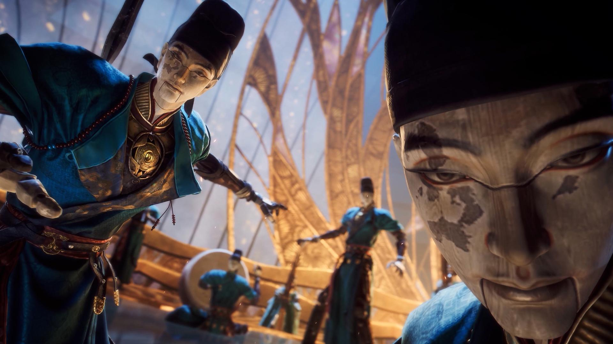
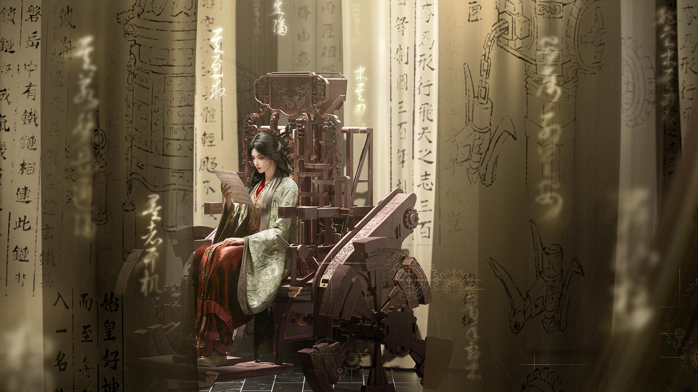
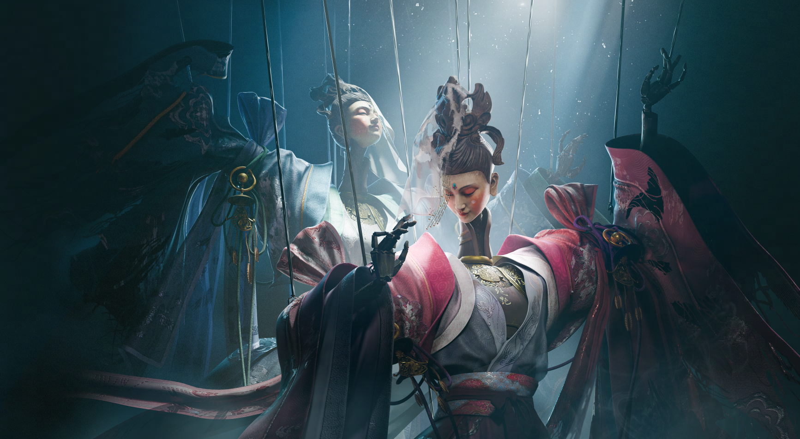
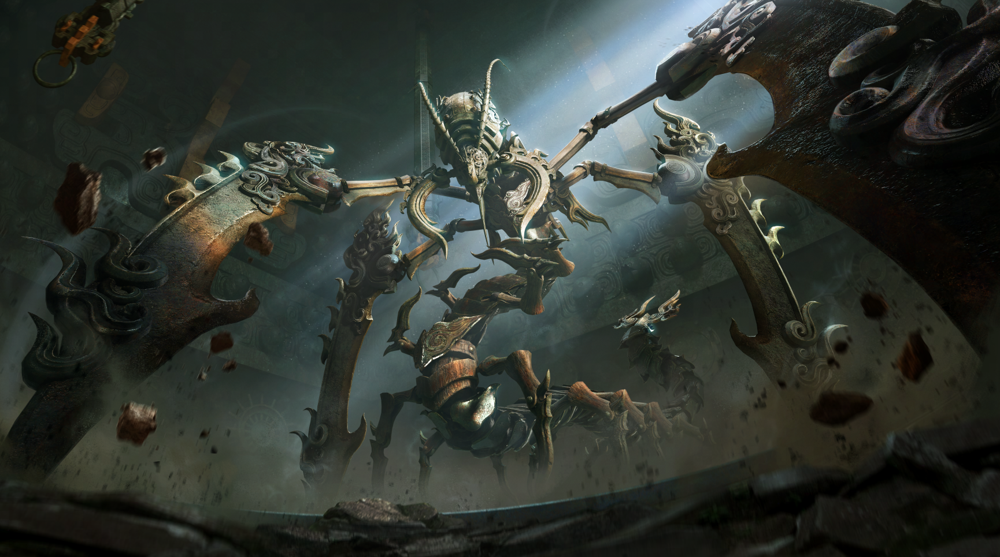
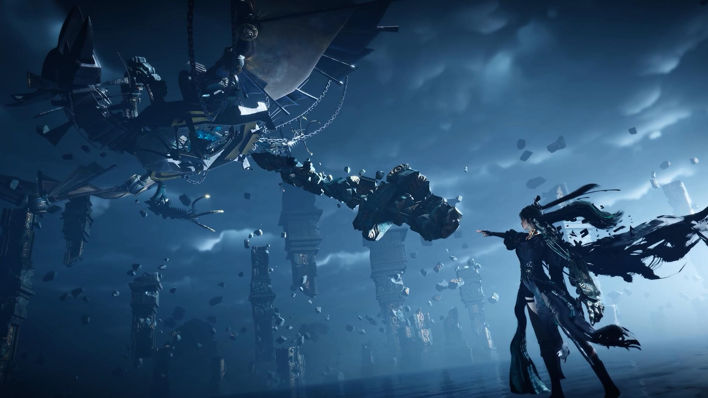

연운 2.0 불견산 업데이트 총정리, 신규 무공 권갑 시스템까지
딱 잘라 말하면 이번 2.0의 주인공은 새 지역이 아니라 '권갑'입니다. 검 놓고 맨주먹으로 싸우는 무공이 통째로 하나 들어왔거든요. 마침 오늘(7월 23일) 대규모 확장팩 '불견산'이 열리면서 연운이 2.0 버전에 들어갔는데요, 영원한도시에서 연운을 이렇게 제대로 정리해 보는 건 이번이 처음이라 주인장도 물량 훑어보다 좀 놀랐습니다.(ㅋㅋ) 오늘은 가장 화제인 권갑을 중심으로, 2.0에서 뭐가 새로 생겼는지 쭉 정리해 볼게요.
게임 자체가 낯설다면 이것만 알고 가시면 됩니다 — '연운'(원제 연운십육성, 영문명 'Where Winds Meet')은 에버스톤 스튜디오가 만들고 넷이즈 게임즈가 서비스하는 3인칭 오픈월드 무협 액션 RPG입니다. 오대십국 시절의 강호를 배경으로 협객이 되어 자기만의 이야기를 써 내려가는 컨셉인데요, PC·PS5로 작년(2025년) 11월 14일 글로벌 정식 출시했고 이후 모바일·엑스박스까지 순차로 합류하면서 지금은 PC·PS5·엑스박스 시리즈 X|S·모바일 전 플랫폼에서 같은 계정으로 이어 할 수 있는 크로스플레이 게임이 됐습니다.

불견산에 숨어 있던 고대 묵가 기관 도시의 한 장면
이미지 출처: 게임사 제공 이미지 · 네이버 본문엔 받아서 재업로드 권장
1. 권갑 - 검 대신 주먹으로 싸우는 신규 무공
권갑은 이번 2.0에서 새로 추가된 근접 무기로, 검을 쓰는 협객 대신 맨손으로 싸우는 '동양 무승' 콘셉트의 무공입니다. 밀착 전투·연속 공세·순간 폭발력에 초점을 맞춘 무기라 장병기보다 전투 템포가 훨씬 빠르다고 하네요. 게임뷰 보도를 보면 "방어와 동시 끊임없는 반격이 결합된 무공의 정수로, 타격하는 경로의 모든 것을 파괴한다"는 표현까지 나올 정도라 화력은 확실히 세 보입니다.
비유하자면 장병기가 창·검으로 거리를 재는 '체스'에 가깝다면, 권갑은 상대 품 안까지 파고들어 연타를 꽂는 '복싱'에 가까운 셈이죠. 권갑 하나로 끝이 아니라 신규 무학 유파 '파죽연'이라는 이름으로 두 무공이 한 세트로 묶여 나오는데요, 사거리가 완전히 다른 두 무공을 오가며 콤보를 짜는 게 파죽연의 핵심입니다.
| 무학 유파 | 세부 무공 | 역할 |
|---|---|---|
| 파죽연 | 권갑 '천지의 주먹' | 근거리 폭발적 피해 |
| 승표 '천기의 사슬' | 원거리 견제 · 적 끌어모으기(군중 제어) |
2026.07.23 공개된 연운 2.0 '불견산' 업데이트 정보 기준
정리하면 근접에서 권갑으로 폭딜 → 승표로 원거리 견제하며 적을 끌어모음 → 다시 근접 폭딜로 이어지는 흐름이라, 높은 기동성을 살려 근거리·원거리를 오가는 액션을 좋아하는 분들이라면 눈여겨볼 만한 무공입니다.
권갑 전투는 근접 콤보 연출이 핵심이라 실제 플레이 화면으로 보여주는 게 제일 좋습니다
2. 불견산 - 3층 구조 입체 지형의 신규 지역
불견산은 천 년 동안 세상에 드러나지 않았던 고대 기술 도시로, 기존 지역과 달리 높이차를 활용한 입체 탐험이 핵심입니다. 청하·개봉·하서가 평면적인 탐험 위주였다면, 불견산은 지상 산림 → 허공 울타리 → 지하 묵굴로 이어지는 3층 구조라 절벽·동굴·폭포 뒤편까지 전부 직접 들어가 볼 수 있다고 해요. 광선 추적·조명 효과도 2.0에 맞춰 업그레이드돼서 동양의 신비로운 분위기와 스팀펑크풍 기계 문명이 섞인 그래픽을 강조했습니다.
| 층 | 이 층에 있는 것 |
|---|---|
| 지상 산림 | 산과 숲으로 덮인 겉면, 절벽·폭포 등 바깥 지형 |
| 허공 울타리 | 공중 삭도·구름걸음 궤도 같은 공중 이동 구간 |
| 지하 묵굴 | 묵가 기관 도시의 속살, 동굴·기관 장치 구역 |
불견산 3층 구조를 층별로 정리 · 2026.07.23 공개 정보 기준
지역 곳곳엔 상호작용 '기관' 장치가 깔려 있는데, 신규 플레이 요소인 '비결'로 이 기관을 조작하거나 부품을 조립해 '기관조'라는 탈것을 직접 만들어 숨겨진 길을 열 수 있습니다. 여기에 공중 삭도·구름걸음 궤도 같은 교통 인프라 건설, 신규 생물 '묘묘냥'과 도발하는 원숭이 NPC(진행하면 '원숭이 왕' 커스터마이징도 가능)까지 더해져서, 탐험 콘텐츠 자체의 물량이 이전 지역보다 확실히 늘었습니다.
3. 묵산도 - 전투 대신 기관 제작으로 크는 신규 문파
묵산도는 불견산에 은거하는 기술자 집단으로, 전투가 아니라 기관 제작과 '천공 부여'로 성장하는 신규 문파입니다. 문파에 가입하면 화·수 / 화·독 / 수·독처럼 속성을 조합한 복합 속성 제작이 풀리는데요, 연구 분야 선택·과제 연구·논문 게재 같은 방식으로 문파 안에서 성장하는 구조라 몬스터 사냥형 문파와는 결이 완전히 다릅니다.
재밌는 설정도 하나 있는데, 묵가 기술이 워낙 뛰어나서 표적이 되기 쉬운 탓에 묵산도 제자들은 강호를 떠돌 때 다른 문파 신분으로 위장합니다. 그런데 정체가 들통나면 다른 플레이어에게 기습당해 붙잡히고, 강제로 천공 부여 제작에 동원될 수도 있다고 하네요.(ㅋㅋ) 건설·제작 계열을 좋아하는 분들한테는 딱 맞는 문파일 것 같습니다.

기관 장치를 연구하는 묵산도 소속 캐릭터 이미지
이미지 출처: 게임사 제공 이미지 · 네이버 본문엔 받아서 재업로드 권장
4. 신규 보스 3종 - 기관 인형과 독충 이수
이번 업데이트에는 인간이 아닌 기관 병기 계열 보스 3종이 새로 추가됩니다. 하나하나 성격이 뚜렷해서 표로 정리해 봤습니다.
| 보스 | 유형 | 특징 |
|---|---|---|
| 장만사(검희 인형) | 진수 보스 | 선행 스토리 '굳건한 신념' 필요, 수중 기관 퍼즐 후 2페이즈 결전(백괴 소환 → 검희 인형) |
| 자혜 · 차혜 | 필드 보스 | 쌍둥이 기관 무희 인형, 동시 협공이라 회피 타이밍이 관건 |
| 강철 지네 | 필드 보스 | 독 속성 기관 이수, 중독되면 외형까지 변이하는 연출 |
2026.07.23 공개된 연운 2.0 '불견산' 업데이트 정보 기준
이 중에서도 장만사 보스전은 묵성 하층 윤파 마을에서 시작해 수중 탐험·기관 퍼즐을 풀며 묵심호 깊은 곳까지 들어가는 구성이라, 단순히 때리고 끝나는 보스전이 아니라 탐험 → 퍼즐 → 결전으로 이어지는 미니 스토리에 가깝습니다. 전투 자체는 백괴 인형을 다수 소환하는 1페이즈와 실에 조종되는 죽마 형태 검희 인형과 맞서는 2페이즈로 나뉘는데, 적절한 타이밍에 '세력 해제'를 성공시켜야 최대 생명력 감소를 회복할 수 있다고 하니 관찰력과 반격 타이밍이 핵심인 보스입니다.

실에 조종되는 죽마 형태의 검희 인형
이미지 출처: 게임사 제공 이미지 · 네이버 본문엔 받아서 재업로드 권장

독 속성 기관 이수 계열 필드 보스, 강철 지네
이미지 출처: 게임사 제공 이미지 · 네이버 본문엔 받아서 재업로드 권장
5. 신규 스토리 - 묵문의 천 년 비밀
메인 스토리는 이번 업데이트로 새 국면을 맞이하는데, 주인공(소당주)이 오랜 동료 진중원·풍계승과 함께 안개를 헤치고 기관을 돌파해 불견산에 발을 들이는 전개입니다. 그곳에서 묵문이 천 년간 감춰온 비밀과 하늘을 향한 오랜 염원이 조금씩 드러난다고 하네요. 옛 동료와의 재회, 그리고 기존 스토리에 등장했던 '수금루' 세력의 흔적이 다시 나온다는 점도 눈에 띕니다 — 완전히 새로운 얘기라기보다는 기존 강호 이야기의 다음 장에 가까운 느낌이랄까요.

불견산 신규 스토리에서 마주하는 거대 기관 유적
이미지 출처: 게임사 제공 이미지 · 네이버 본문엔 받아서 재업로드 권장
연운 성과 - 출시 이후 흥행 기록
연운은 2025년 11월 글로벌 출시 이후 누적 플레이어 수와 스팀 평가 양쪽에서 성적을 낸 게임입니다. 주인장도 찾아보다 숫자 보고 좀 놀랐는데요, 화끈해서 정리 안 할 수가 없었습니다.
| 시점 | 성과 |
|---|---|
| 2025.11(글로벌 출시 24시간) | 해외 플레이어 200만 명 돌파 · 스팀 최다 판매 Top7 · 동시접속 19만 명 이상 |
| 2025.12(글로벌 출시 한 달) | 글로벌 누적 플레이어 1,500만 명 돌파 |
| 2026.02 | 누적 플레이어 8,000만 명(중국 서비스 포함 합산 누적) |
| 2026.06 | 엑스박스 시리즈 X|S 합류, PC · PS5 · 엑스박스 · 모바일 크로스플레이 완성 |
각 수치는 넷이즈 게임즈 발표·해외 매체 보도 기준이며, 이후에도 계속 늘어나고 있어 위 표는 해당 시점 스냅샷입니다.
스팀 페이지에 들어가 보면 오늘(2026.07.23) 기준 전체 평가는 '매우 긍정적'(리뷰 113,152건 중 긍정 86%)이고, 한국어 리뷰만 따로 보면 3,164건 기준 87%입니다. 출시 24시간 200만이라는 숫자도 놀랍지만, 중국 서비스까지 합친 누적이 2026년 2월에 8천만을 찍었다는 게 더 인상적이네요 — 반짝 화제로 끝난 게 아니라 계속 사람이 붙고 있다는 뜻이니까요.
자주 묻는 질문
Q. 연운, 과금(확률형 아이템) 부담이 큰가요?
아니요. 연운은 능력치를 파는 확률형 뽑기 없이 외형(코스메틱) 판매만으로 운영합니다. 스팀 상점 페이지에도 "모든 게임 플레이 콘텐츠는 무료이며, 과금 요소는 외관 아이템으로만 제한됩니다", "'페이 투 윈' 요소는 철저히 배제하였습니다"라고 못 박아 뒀어요.
Q. 게임 자체를 사야 하나요? 가격이 어떻게 되나요?
안 사도 됩니다. 스팀 기준 무료 플레이(F2P)라 상점 가격이 '무료'로 표시돼 있어서, 계정만 있으면 받아서 바로 시작할 수 있습니다.
궁금한 점 있으면 언제든 댓글 남겨주세요!
참고한 곳
· 연운(Where Winds Meet) 공식 홈페이지 - 뉴스
· Where Winds Meet 스팀 스토어 페이지